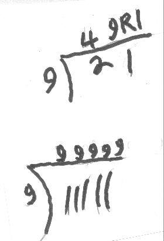
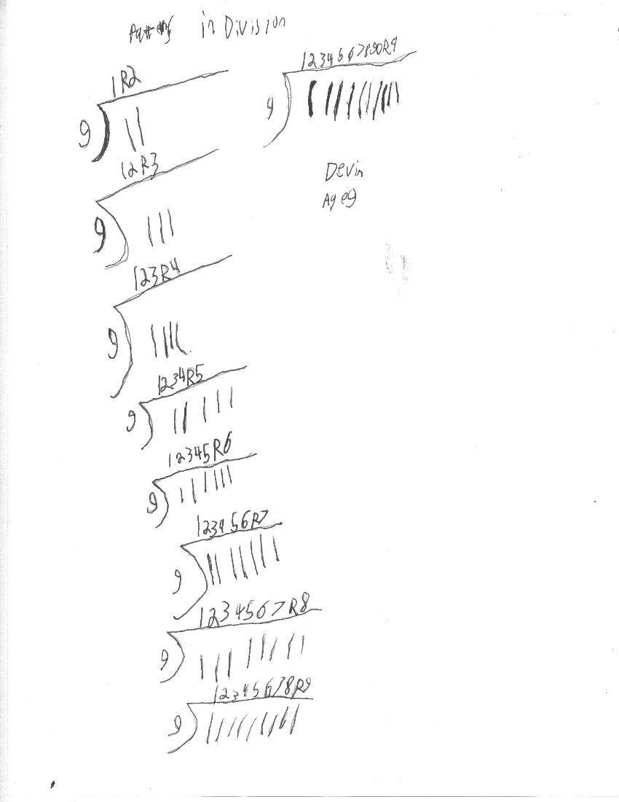

Devin, 3rd grade, finds patterns in division
Act I
Devin was working on division problems like 12'7 = 1 R5. Don's normal thing is to have his students write the answer as 1 5/12. Remembering John Trivett's work1, Don showed Devin that he could do the same problem and get this answer 12'7 = 3 R -9, After all 12 = 7*3 - 9. Then he proceeded to do a few more like that, with negative remainders.
Act II- the next week
Devin started some division problems like these:

After a while, Don figured out what Devin was doing. He was dividing 2 into 9 was 4, with remainder of 1, then 1 into 9 is 9, so his answer was 49 R1. He did the same thing with the second problem. Don talked with Devin about what the division means.
He then went back to do the following, which Don had never seen!

Great work, Devin!